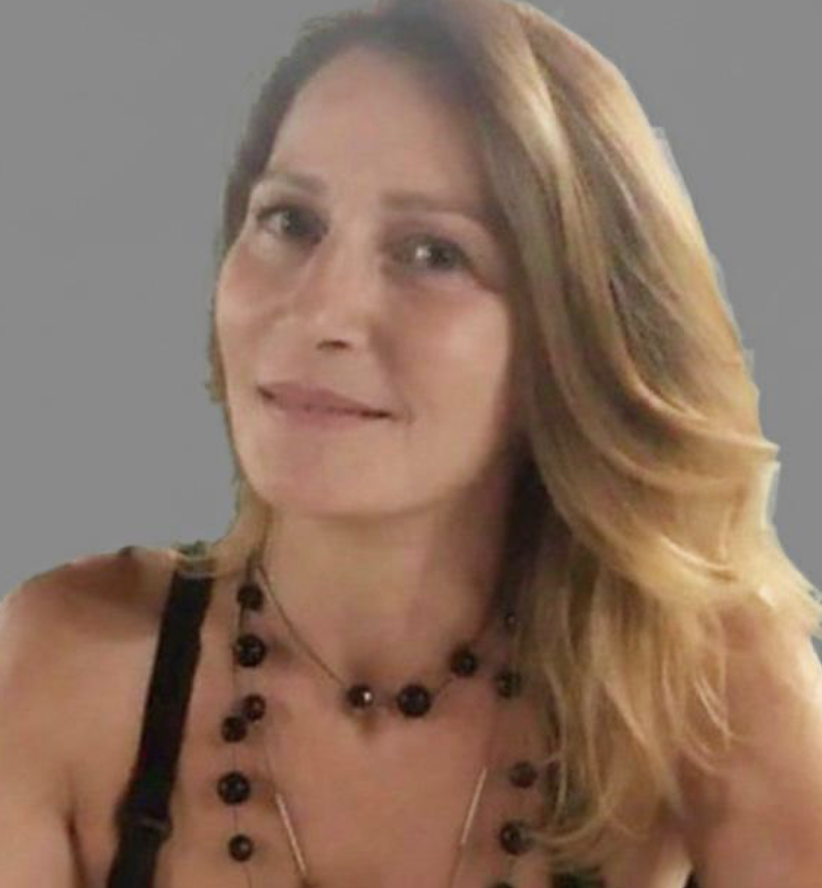

“Life is not about finding yourself, it’s about creating yourself.”
Sabrina Murmigotti
President
Born in Milan, Italy, she moved to the United States at age 20 and spent 13 years in Chicago. That experience profoundly shaped her, helping her adapt to new settings, embrace different perspectives, and build meaningful cross-cultural relationships. It was also in Chicago that she raised her daughter, now a brilliant woman and one of her greatest sources of joy.
Professionally, she built a strong career in sales, successfully managing and growing businesses for leading tile companies. Working in dynamic and competitive environments strengthened her ability to build trust, understand people, and deliver consistent results.
She is someone who feels deeply and finds genuine joy in connection. She values meaningful conversations, intentional listening, and authentic, natural relationships. She believes people enter our lives for a reason and is often struck by how they contribute to her growth.
Her curiosity and love for life drive her to explore—through travel, nature, and new experiences. At the same time, she values stillness and the moments that allow her to remain present and grounded.
She lives with intention, caring for herself through healthy nutrition, connection with nature, and continuous learning. These are not just habits, but commitments that keep her balanced, energized, and aligned.
She believes in contributing to a better world, knowing that even the smallest actions can have a meaningful impact, and in giving back to society in ways that matter.
At her core, she strives to live with presence and purpose—embracing life fully, building meaningful connections, and moving forward with curiosity and openness toward what’s next.